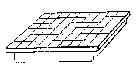
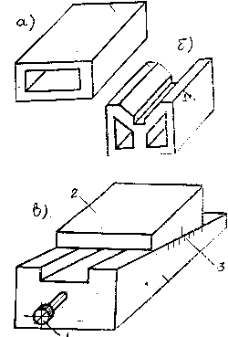
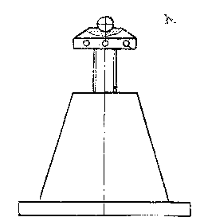
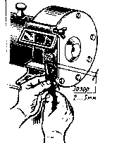

РАЗМЕТКА. ПРИСПОСОБЛЕНИЯ И ОБОРУДОВАНИЕ
| Рисунки приспособлений и оборудования | Характеристика |
|---|---|
|  | Разметочная плита – отливается из мелкозернистого серого чугуна на рабочих поверхностях больших плит иногда делают продольные и поперечные канавки (глубиной 2-3мм, шириной 1-2мм) которые образуют равные квадраты. Канавки облегчают установку на плите различных приспособлений. |
|  |
Подкладки – служат для обеспечения правильной установки деталей при разметке, а также для предохранения разметочных плит от царапин и забоин.
Подкладки бывают: а. плоские б. призматические в. клиновидные Клиновидные подкладки представляют собой два соединения, точно обработанных стальных клина. Размечаемую заготовку устанавливают на верхней поверхности клина – 2. Подъём и опускание заготовки производят вращением винта – 1. Имеется шкала – 3, позволяющая контролировать и регулировать высоту клина (1 деление = 0,1мм). |
|  |
Домкрат – применяют для установки громоздких и тяжёлых заготовок.
Они позволяют выверять и регулировать положение размечаемых заготовок по высоте. Домкрат обыкновенный имеет в корпусе винт с прямоугольной резьбой с шаровой, плоской, призматической и роликовой головками. Домкрат роликовый дает возможность не только регулировать положение заготовки по высоте, но и свободно поворачивать её в горизонтальной плоскости, что необходимо при разметке тяжёлых заготовок. |
|  |
Заточной станок предназначен для заточки режущего инструмента.
Перед заточкой подручник устанавливают как можно ближе к шлифовальному кругу. Зазор между подручником и заточным кругом должен быть не более 2-3мм, чтобы затачиваемый инструмент не мог попасть между кругом и подручником. Заточку лучше всего вести с охлаждением водой, в которую добавляют 5% соды или на мокром круге. |